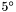
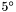

Example code, testing and verification
WCSLIB has an extensive test suite that also provides programming templates as well as demonstrations. Test programs, with names that indicate the main WCSLIB routine under test, reside inThe high- and middle-level test programs are more instructive for applications programming, while the low-level tests are vital for verifying the integrity of the mathematical routines.
- High level:
twcstab provides an example of high-level applications programming using WCSLIB and CFITSIO. It constructs an input FITS test file, specifically for testing TAB coordinates, partly usingwcstab.keyrec, and then extracts the coordinate description from it following the steps outlined in wcshdr.h.
tpih1 and tpih2 verify wcspih(). The first prints the contents of the structs returned by wcspih() using wcsprt() and the second uses cpgsbox() to draw coordinate graticules. Input for these comes from a FITS WCS test header implemented as a list of keyrecords,wcs.keyrec, one keyrecord per line, together with a program, tofits, that compiles these into a valid FITS file.
tfitshdr also useswcs.keyrecto test the generic FITS header parsing routine.
twcsfix sets up a wcsprm struct containing various non-standard constructs and then invokes wcsfix() to translate them all to standard usage.
- Middle level:
twcs tests closure of wcss2p() and wcsp2s() for a number of selected projections. twcsmix verifies wcsmix() on the grid of celestial longitude and latitude for a number of selected projections. It plots a test grid for each projection and indicates the location of successful and failed solutions. twcssub tests the extraction of a coordinate description for a subimage from a wcsprm struct by wcssub().
grid of celestial longitude and latitude for a number of selected projections. It plots a test grid for each projection and indicates the location of successful and failed solutions. twcssub tests the extraction of a coordinate description for a subimage from a wcsprm struct by wcssub().
tunits tests wcsutrn(), wcsunits() and wcsulex(), the units specification translator, converter and parser, either interactively or using a list of units specifications contained in units_test.
- Low level:
tlin, tlog, tprj1, tsph, tspc, tspc, and ttab1 test "closure" of the respective routines. Closure tests apply the forward and reverse transformations in sequence and compare the result with the original value. Ideally, the result should agree exactly, but because of floating point rounding errors there is usually a small discrepancy so it is only required to agree within a "closure tolerance".
tprj1 tests for closure separately for longitude and latitude except at the poles where it only tests for closure in latitude. Note that closure in longitude does not deal with angular displacements on the sky. This is appropriate for many projections such as the cylindricals where circumpolar parallels are projected at the same length as the equator. On the other hand, tsph does test for closure in angular displacement.
The tolerance for reporting closure discrepancies is set at degree for most projections; this is slightly less than 3 microarcsec. The worst case closure figure is reported for each projection and this is usually better than the reporting tolerance by several orders of magnitude. tprj1 and tsph test closure at all points on the grid of native longitude and latitude and to within  of any latitude of divergence for those projections that cannot represent the full sphere. Closure is also tested at a sequence of points close to the reference point (tprj1) or pole (tsph).
degree for most projections; this is slightly less than 3 microarcsec. The worst case closure figure is reported for each projection and this is usually better than the reporting tolerance by several orders of magnitude. tprj1 and tsph test closure at all points on the grid of native longitude and latitude and to within  of any latitude of divergence for those projections that cannot represent the full sphere. Closure is also tested at a sequence of points close to the reference point (tprj1) or pole (tsph).
Closure has been verified at all test points for SUN workstations. However, non-closure may be observed for other machines near native latitude for the zenithal, cylindrical and conic equal area projections (
for the zenithal, cylindrical and conic equal area projections (ZEA,CEAandCOE), and near divergent latitudes of projections such as the azimuthal perspective and stereographic projections (AZPandSTG). Rounding errors may also carry points between faces of the quad-cube projections (CSC,QSC, andTSC). Although such excursions may produce long lists of non-closure points, this is not necessarily indicative of a fundamental problem.
Note that the inverse of the COBE quad-qube projection (CSC) is a polynomial approximation and its closure tolerance is intrinsically poor.
Although tests for closure help to verify the internal consistency of the routines they do not verify them in an absolute sense. This is partly addressed by tcel1, tcel2, tprj2, ttab2 and ttab3 which plot graticules for visual inspection of scaling, orientation, and other macroscopic characteristics of the projections.